Material – steel #
Tension bracing #
I want to start the steel section by showing options for modelling the very basic part of steel structures – tension bracing. There are multiple ways do to it:
-
You can use tension-only members in software. However, remember that without lateral force, such structure will be unstable – one of braces must be in tension.
-
You can manually “switch” off the compression braces, depending on the load case. Not all software has such features. You can also create a model that has some of the braces removed;
-
If the braces are the same size, you can model both braces, reduce axial stiffness by 0.5 and at the design stage manually account;
Options for modeling tension bracing
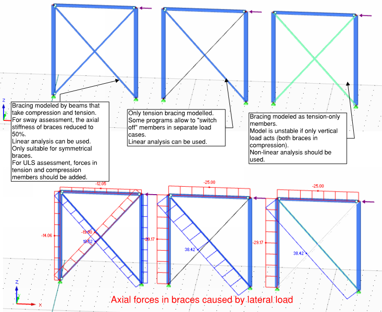
Buckling #
Design is easy while all the elements are in tension. just check the stress.. and done! The actual challenge is assessment of buckling.
After I wrote this section, I realized that actually the content I have created is very similar, but less detailed that Lukasz Skotny has done on this blog EnterFEA. Therefore, I rather provide you with links to the better explanation:
- General principles about buckling analysis: https://enterfea.com/what-is-buckling-analysis/;
- Example of a buckling calculation for column with a variable cross section: https://enterfea.com/buckling-length-of-a-column-with-a-variable-cross-section/
- Example of a lateral-torsional buckling calculation for a beam: https://enterfea.com/how-to-calculate-critical-moment-with-numerical-analysis-in-rfem/
The short summary from perspective of Eurocodes:
-
First determine Euler’s critical buckling load. This is relatively easy to do using FE analysis. This approach is applicable to both column buckling checks and beam LTB (lateral torsional buckling) checks.
-
Then reduce this “critical buckling load” to account for imperfections of member. Any column or beam is never completely straight and additional bending is imposed due to compression member. This can be done using Equations in Eurocodes.
Steel connections – modelling in overall model #
For every steel connection you want to understand two main characteristics:
Pinned or Fixed #
Rotational stiffness (EN 1993-1-8 Clause 5.2) clasification:
-
Nominally pinned, does not transfer bending moments. Most of typical joints can be considered as such;
-
Rigid/fixed/continuous, ensures complete moment transfer;
-
Semi-rigid joints – acts as rotational springs. I will not cover these in my notes. But the general approach would be to calculate joint detail, determine the rotational stiffness and then use this in the overall model.
Eurocode has an approach do classify every joint. You can do this by
stiffness or strength. A rigorous calculation approach is given in
section 6.3 of 1993-1-8.
However, it is important to understand the types of joints that are
typically pinned and ones that are typically fixed. In my opinion,
you should be doing the rigorous calculation according to Eurocode
only in exceptional bespoke cases.
Steel construction institute documents covers typical types of connection and describes necessary checks for the joints themselves:
- See P358 “Simple joints to Eurocode 3” for nominally pinned connections;
- See P398 “Moment-resisting joints to Eurocode 3” for fixed connections;
If in doubt – use pinned connection in overall model as this is likely to produce more onerous internal forces and larger deformations.
For trusses composed of hollow sections, you should (almost) always treat connections as pinned, see Eurocode 1993-1-8 clause 5.1.5.
Typical steel connections - pinned
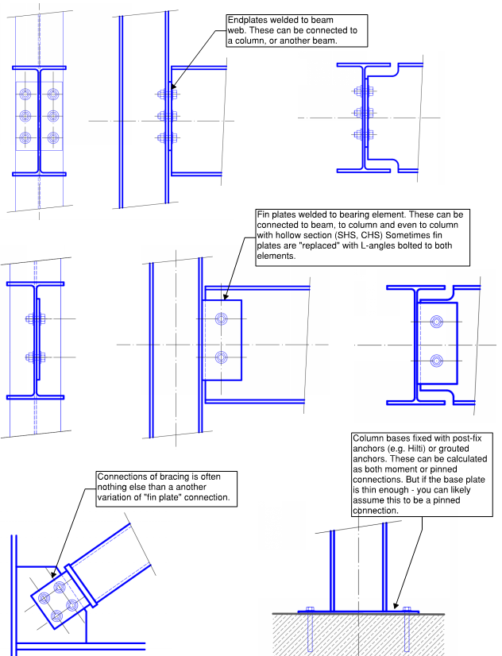
Typical steel connections - fixed
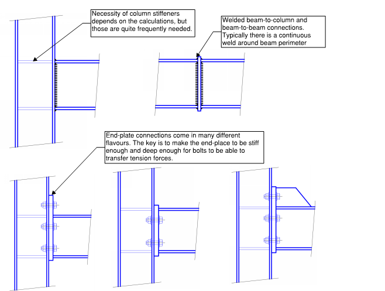
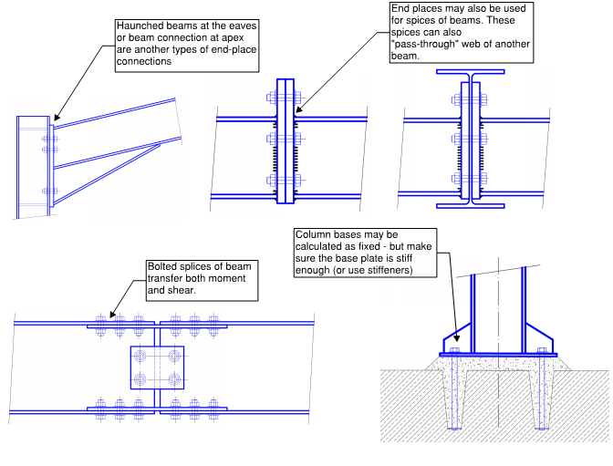
Account for joint eccentricities #
Use rigid links to account for eccentricities in joints.
For “pinned” column/beam joints, note that the design of column should be conservative and account that there might be partial moment transfer, even if the connection is assumed to be pinned. IStructE manual for Steel design to Eurocode 3 suggests using offset that is equal to half of column dimension + 100mm.
If the overall design of building is done by consultant and connection design by steelwork contractor, it makes sense to agree on these added 100mm (or more, if the beams are big), then this additional eccentricity can be accounted for at overall model by consultant and connection design by contractor.
Eccentricities - assumed offset from column face
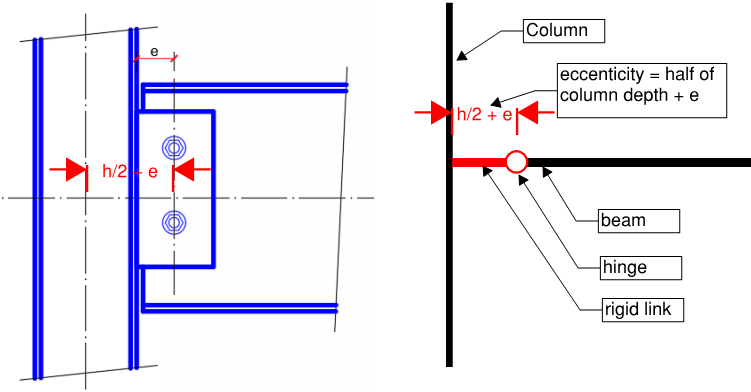
For the design of trusses composed of hollow sections, Eurocode 1993-1-8 clause 5.1.5 gives limits of eccentricities that can be ignored. If eccentricities are larger, these should be considered in design.
Eccentricities - trusses composed of hollow sections
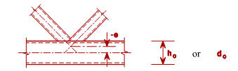
As the additional of eccentricities is a straight-forward process, I suggest that you always model these in, even if the codified rules allow you not to.
Think where the pin is? #
This tip is devoted to my experience in one particular project. The connection looked like this:
Primary-secondary beam connection
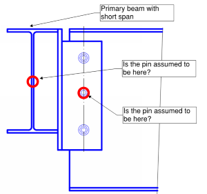
And the connection was designed to resist shear only, i.e. bolts have been designed to take vertical shear only.
The primary beam was not designed to resist any torsion. So – where is the pin?
- Is it at the location of bolts?
- Or is it at the centroid of torsionally unrestrained main beam?
..you are likely to have guessed this already – both of these locations are acting as “pins” creating structural system that is not stable. In my opinion, a correct design would be to design the bolted connection to resist moment = eccentricity * vertical shear force.
Slippage of bolts in shear #
Slippage of bolts in shear connections can significantly impact your results. Unfortunately, I learned it in the “hard way” – there was a bit of lack of supervision at early stage of my career and I designed a truss like this:
Truss - bottom chord connection
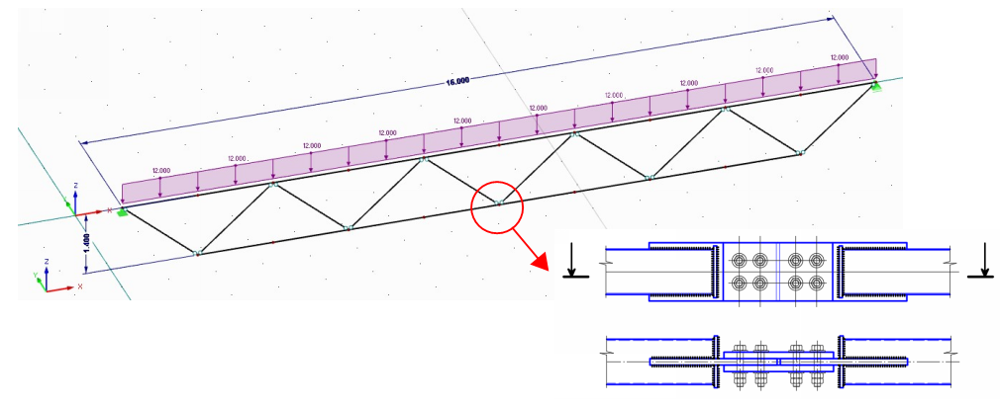
Then they erected the truss.. and noticed that there are unexpectedly large deflections from dead load. Concerns were raised whether the trusses have been seriously under-designed.. The actual reason was bolt slippage.
Bottom chord connection in the middle of the truss was designed using ordinary bolts in shear. Below is a comparison of deflections for truss without slippage taken into account and truss with 2mm (M16 bolts in ordinary d=18mm holes). Slippage allowed. I am showing an example truss (not the real project), assuming trusses are placed at 6m centres and there are 1kN/m2 load at SLS.
Truss - deflections considering the bolt slippage
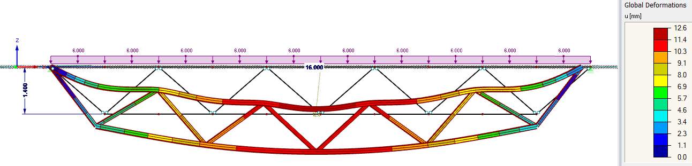
Maximum deflection considering bolt slip = 17.5mm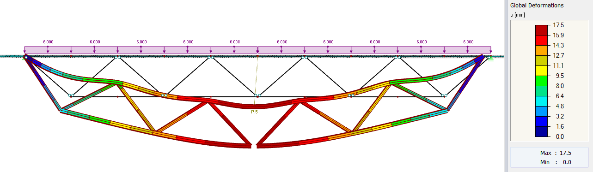
At my real project it turned out not to be “critical” as for simple truss this had a nominal effect on forces and the deflections were still acceptable. However, it might had turned out much worse if this would be statically indeterminate system and design of other members would be affected by bending stiffness of these trusses.
The simple advice here would be – either account for potential extra displacement or use HSFB (friction bolts). If your structure will be statically indeterminate or spanning in two directions – I would strongly suggest using friction bolts only.
Steel connections - design of details #
Challenges #
When modelling steel connections, there are following challenges:
- Representation of bolts;
- Representation of welds;
- Representation of contact between surfaces – compression forces transferred only;
- Local buckling of connection plates;
There are tools available #
Steel connection design is an area where software is progressing quickly. “Next generation” software such as Idea Statica and Dlubal RFEM 6 are offering modelling using “components”. And these components are e.g. bolts or welds. These components consists of carefully selected sets of FEA elements such as springs, hinges, and rigid links (and other FEA elements) to correctly represent the behaviour or “component”.
The notes below are ways how I have manually tried to represent these “components” before these tools were available.
Modelling of bolts in steel connections - my approach #
-
It is important to model the bolt area, not just represent it with a nodal support or 1D bar element. The best way of doing this using rigid links and create a “spider”.\
-
If it is important to capture the correct shear distribution in adjacent plate – the good option for accounting for bolt bearing on to surrounding plate is to use nonlinear translational releases that release movement in one direction only. Note that as soon as you do this, you must run geometrically non-linear analysis.
Note that this is “optional” to model this and this additional complexity “pays off” only if stresses around the bolt govern the plate design.
Bolts - modelling behaviour in steel details
Rigid elements representing bolt:
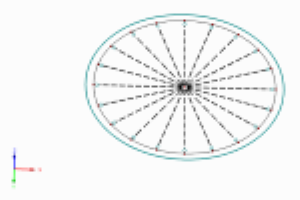
Hinges at end of rigid links to represent bearing:
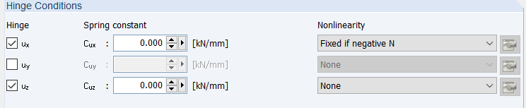
Forces in rigid elements:
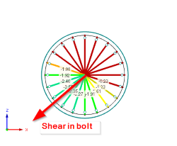
- Another thing that you might want to account for – is slippage of
the bolt. Typically opening size is 1-3mm larger than bolt (EN 1090
sets the rules). This is done to accommodate any imperfections that
will occur during fabrication/erection of steel structure. Note that
this slippage per bolt could either be 0 or 2mm or 3mm and you will
not know this before the structure is built.
I personally would only advise to account for slippage in some special cases and in cases where the maximum displacement in the connection is important.
Representation of welds #
If you are using a “general purpose” software like Autodesk Robot, I suggest that you model the welded plates together as continuous. And do manual checks for welds.
..I know that this is not quite that answer that a keen FE software user wants to hear. But that is my honest opinion.
For the design, you may choose to:
- If the stresses are high, use full penetration butt welds. This is the simplest option for designed, but the hardest (and most expensive) to fabricate.
- If the stresses are lower, you may also look at the weld capacity and back-calculate the maximum allowable stresses in there.
Contact #
In my opinion, reasons to model “contact” are:
- To accurately account for prying effects;
- To design connection where moment can work in both directions or/and about both axis (i.e. different parts of contact in compression, depending on loading);
- To more accurately account for compression stiffness of the element that is being contacted.
There are generally two options for modelling the contact.
- Use surface support that supports forces one-direction-only.
- Use “solid” that transfers only compression, but no tension.
Note that from modelling perspective, you could also create a grid of short rigid links that are able to transfer forces in one direction only.
Firstly, do a judgement whether you really need to model contact
behaviour – sometimes the location of compression force transfer is
always in one place – then you can “get away” with a linear
support.
Note that most of the buildings around have been designed without
use of such advanced FE features, but using throughout understanding
the behaviour of joint and doing a simple support assumption
accordingly.
I also suggest that you evaluate whether you want to model both sides of contact as plates. Modelling task will get significantly easier if you do decide to model one part and represent other with a “surface support”.